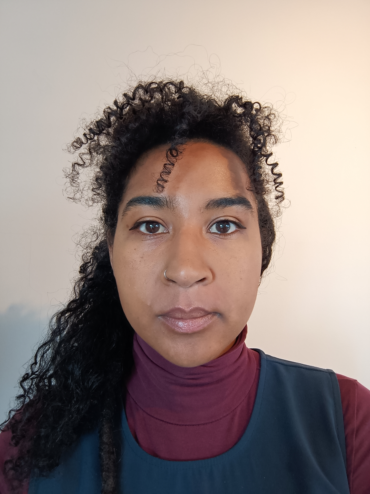

Charlena Carnegie
Welcome to my virtual world
Summary
- Free Thinking
- Resourceful
- Versatile
My strengths up until the last 6 years
have mainly been that I was an incredibly
sociable and caring person, which lead me to work as a faciltator
for young adult with learning difficulties. Having dropped out
of university and without a degree, I also did not see what else
I could do. My life drastically changed after moving abroad,
becoming a mother and learning French. This experience brought out strengths I never knew I had.
I didn't know how resourceful, creative and how didicated I could be
to learn new things.